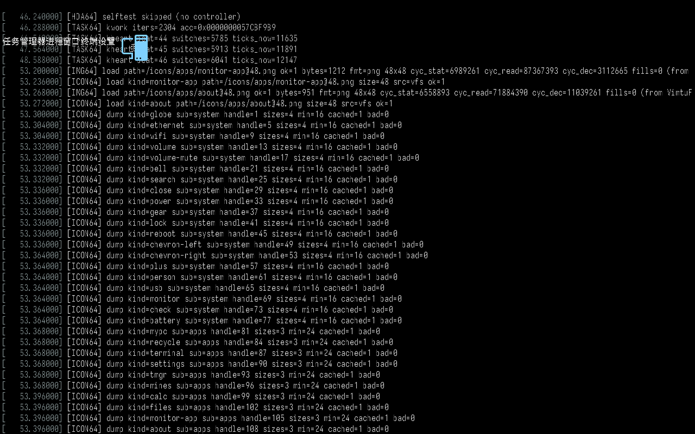
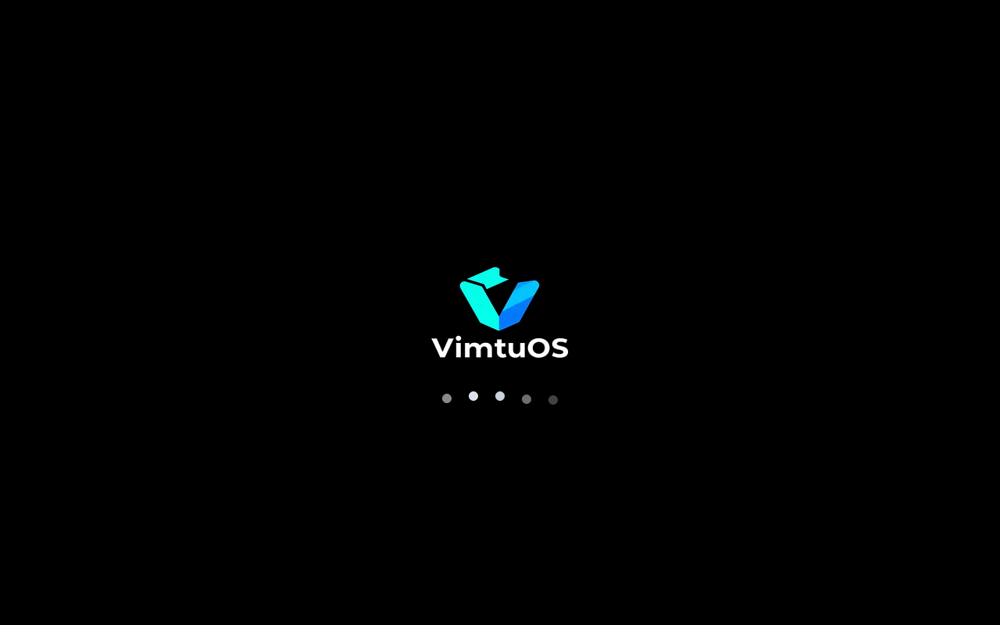
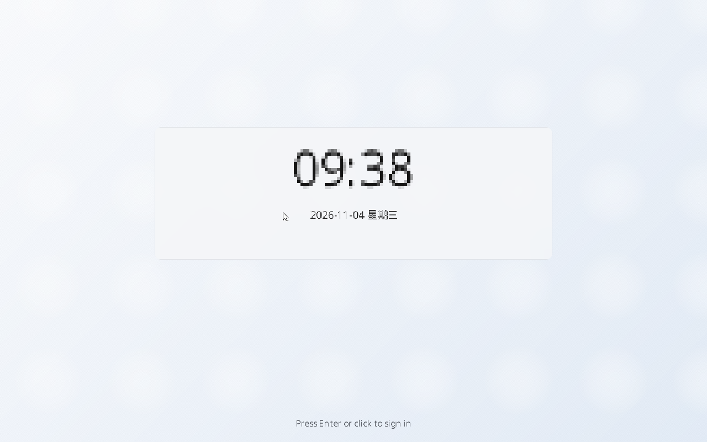

screendump，未做任何修饰。
CON64_SCROLL_BATCH 8 → 1），滚屏改成后备缓冲直接字搬运后单次 ~5–10ms，
才付得起“一行一滚”。屏上这一刻是启动末尾，日志正在被实时泵上来。
dots=5 dot_r=6 gap=34 bounce=6 layout=row；最亮的那颗点还会上跳 6px。
此时亮的是右边几颗，波浪正在往左走。wall_ms=4002 rps=1574（需求 3~5 秒）。[BOOT64] fade in steps=8 … pct=12）。
[LOCK64] lock screen shown … blur_bg=0 why=boot。整个启动过程屏上**没有**任何彩色测试图：
[VGPU] scanout quiet / [FBDEMO] skipped / [EVSHM] demo skipped。[CON64] replay lines=64 dropped=2404 ms=3840 stream=1[CON64] follow bottom=1 rows=39 drawn=39 pending=0 replayed=64 planned=64 complete=1 region_bottom=800 screen_h=800 live_drawn=106 pumps=3[BOOT64] anim start target_ms=6294 fin_ms=629 hold_ms=5036 fout_ms=629 dots=5 rev_ms=1200 … layout=row skippable=0 rps=1574 wall_target_ms=4000[BOOT64] anim done frames=224 elapsed_ms=6300 wall_ms=4002 rps=1574 skipped=0[BOOT64] fade in steps=8 target_ms=500 ms=824 pattern=bayer-4x4 pct=12[CON64] skip disabled=1 (boot log is NOT skippable; keys are swallowed)